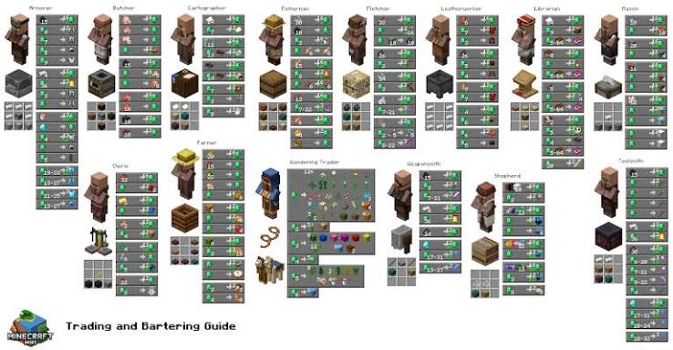
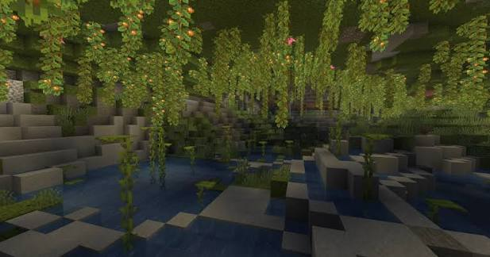

#1. Master the Water Bucket MLG
Carrying a water bucket in your hotbar at all times can save your life from any fall. By placing water right before you hit the ground, you completely negate fall damage. It takes great timing, but it's an essential trick for exploring deep caves and mountains.

#2. Set Up Village Trading Halls
Instead of endlessly mining for diamond gear, cure zombie villagers or trap normal villagers with workstations (like lecterns or Fletcher tables). You can easily trade paper or sticks for emeralds, and emeralds for top-tier diamond armor and enchanted tools.

#3. Safe Mining at Y=-58
In modern Minecraft updates, diamonds spawn most frequently in the deepest parts of the world. Strip mining or cave exploring around coordinates **Y: -58** gives you the highest chance of finding rare diamond veins while avoiding dangerous lava pools at bedrock level.
